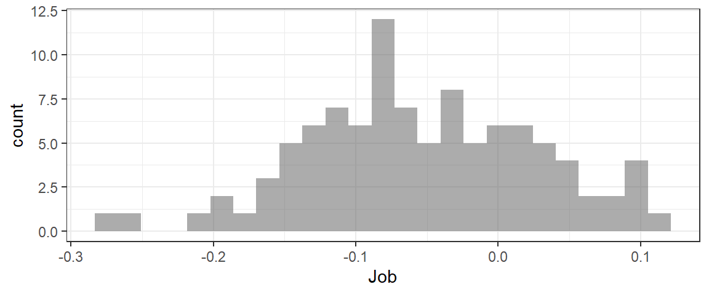
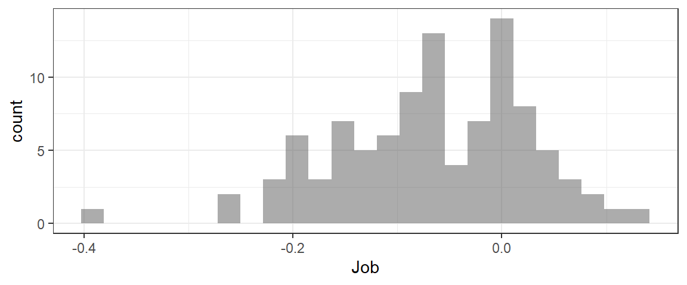

The sample statistic is simply the quantity of interest, computed for the observed dataset.
For example, if you are interested in \(\bar{x}\), the mean number of hours that intro stat students sleep every night (using variable Sleep from the dataset students), the sample statistic would be:
mean(~Sleep, data=students, na.rm=TRUE)## [1] 7.343511(Note the “na.rm=TRUE” input - this tells R to ignore any missing values in the dataset when computing the mean. If you don’t include this input, then if there are missing values (NA) in the data, the result of your calculation will also be NA.)
Another example: what if you wanted to use the variable Rank in the students dataset to estimate \(\hat{p}_{oldest}\), the sample proportion of intro stat students who are oldest siblings?
prop(~Rank=='Oldest', data=students)## prop_TRUE
## 0.3435115More complicated sample statistics can also be computed. For example, what if the parameter of interest is the difference in mean GPAs (variable GPA) between intro stat students who plan to do further education after graduating from college, and those who plan to get jobs (variable Plans)?
We can compute the mean for both groups:
mean(~GPA | Plans, data=students)## Educ Job
## 3.447044 3.382988Then we just need to take the difference between them – we can use the function diff() to do it.
diff(mean(~GPA | Plans, data=students))## Job
## -0.06405607Notice that the output is labelled Job. Which way did the subtraction happen?
We can also compute differences in proportions. For example, let’s find the difference in proportions male and female intro stat students who plan to get jobs after college graduation. First, we can make a table of the two relevant variables, Gender and Plans, using the input format='prop' to get the results as proportions rather than number of observations:
tally(~Plans | Gender, data=students, format='prop')## Gender
## Plans Female Male
## Educ 0.2941176 0.3968254
## Job 0.7058824 0.6031746We need to isolate just the second row of the table:
tally(~Plans | Gender, data=students, format='prop')[2,]## Female Male
## 0.7058824 0.6031746Then take the difference.
diff(tally(~Plans | Gender, data=students, format='prop')[2,])## Male
## -0.1027077Your turn: What about computing…
\(\hat{p}_{youngest}\), The proportion intro stat students who are the youngest sibling in their family?
prop(~...=='...', data=...)str(students) #to get possible values of Rank variable
prop(~Rank=='...', data=students)prop(~Rank=='Youngest', data=students)Now, what about computing the median heart rate of intro stat students?
#use this line to get the names of the variables in the students dataset:
names(students)
# alternatively, you could use head() or str() to do this.median(~..., data=...)median(~Heartrate, data=students)Next, compute the difference in mean top speeds driven (variable Topspeed) between men and women.
Finally, compute the difference in proportions men and women intro stat students who do not exercise regularly (variable Exercise).
To get a bootstrap sampling distribution, we will follow the process:
To do this, we first have to think about how to take a single bootstrap sample from the data. We won’t have to do this step when using real data to compute a CI; we are just doing it here for illustration, to better understand how the resampling is done.
To get a bootstrap sample from a dataset, we will use the function sample. It has inputs size – here we want size to be the number of cases in the original dataset – and replace – we will use replace==TRUE to sample with replacement.
For example, to take one bootstrap sample from the students dataset, we would run the r code:
sample(students, size=nrow(students), replace=TRUE)Note that no result will be printed to the screen when you run this code. It does work, though…
You try. How would you compute one bootstrap sample from the HELPrct dataset? *(If your code runs without an error, it’s probably correct…but nothing will print to the screen as a result. You can use the hints to check your work.)
sample(..., size=nrow(...), replace=TRUE)sample(HELPrct, size=nrow(HELPrct), replace=TRUE)For every bootstrap sample, we will have to compute the sample statistic.
To do this, the code will be almost exactly the same as the code used to compute the sample statistic from the original dataset. The only difference is that instead of data=dataset.name, you will input data=sample(...) so that the data used for the calculation is a boostrap sample.
Here’s an example of computing the sample stat for one bootstrap sample, if the parameter of interest is the proportion intro stat students who are the youngest among their siblings:
prop(~Rank=='Youngest',
data=sample(students, size=nrow(students), replace=TRUE))## prop_TRUE
## 0.3206107Note: again, we won’t have to run this code as part of the final calculation of a bootstrap distribution. We are building up to the full code needed to compute the bootstrap distribution, and this is just one piece of it. Once you see how to do the whole thing, you don’t need to do this first anymore.
Compute the sample statistic for one bootstrap sample, if the parameter of interest in the proportion of intro stat students who are the oldest among their siblings.
prop(~..., data=sample(...))prop(~Rank==...,
data=sample(..., size=nrow(...), replace=TRUE))prop(~Rank=='Youngest',
data=sample(students, size=nrow(students), replace=TRUE))What about the sample statistic for one bootstrap sample, if the parameter of interest is the difference in proportions male and female intro stat students who do exercise regularly?
diff(tally(...,...,...)[...])diff(tally(~...|..., data=sample(...), format=...)[...,])diff(tally(~Exercise|Gender,
data=sample(students, size=nrow(students), replace=TRUE),
format='prop')[2,])Once we see how to compute the sample statistic for each bootstrap sample, the only thing we need to add is to repeat the calculation many times (1000 or 10000) and save the results as a dataset.
For example, a bootstrap distribution for the mean GPA of intro stat students:
BSD <- do(1000)*mean(~GPA,
data=sample(students, size=nrow(students), replace=TRUE))
head(BSD)Notice: all we added was do(1000)* at the start of the code!
We can compute a BSD for a proportion in a similar way. For example, a BSD for the proportion intro stat students that are male:
BSD <- do(1000)*prop(~Gender=='Male',
data=sample(students, size=nrow(students), replace=TRUE))
head(BSD)Notice the somewhat strange variable name TRUE.…
There is another way (a bit of a shortcut) to find a bootstrap distribution that only works if the parameter of interest is one proportion. It uses the function rflip(), which flips and imaginary coin a certain number of times. You can specify the probability of getting “heads” on each imaginary coin-flip.
For the students data, the sample proportion Male from the real data was 0.48 and the size of the dataset was 131 observations:
prop(~Gender=='Male', data=students)## prop_TRUE
## 0.480916nrow(students)## [1] 131So each bootstrap sample is like the outcome of a set of n=131 coin flips with probability of “heads” (Male), prob=0.48.
Thus, we can compute a bootstrap distribution via:
BSD <- do(1000)*rflip(n=131, prob=0.48)
head(BSD)Your turn: try using rflip() to generate a bootstrap sampling distribution for the proportion intro stat students who plan to go on for further education after college graduation.
BSD <- do(...)*rflip(n=..., prob=...)BSD <- do(1000)*rflip(n=nrow(students),
prob=prop(~Plans=='Educ',data=students))Just as we could compute more complicated sample statistics (like differences in means or proportions), we can also find bootstrap sampling distributions for the corresponding parameters.
What about a bootstrap sampling distribution for the difference in mean GPA between students who plan to get a job after graduation, and those planning to do more schooling?
#sample stat
diff(mean(~GPA | Plans, data=students))## Job
## -0.06405607#BSD
BSD <- do(100)*diff(mean(~GPA | Plans,
data=sample(students,
size=nrow(students),
replace=TRUE)))
head(BSD) #to see variable names in BSD datasetgf_histogram(~Job, data=BSD)
Similarly, we can find a BSD for a difference in proportions - for example, the difference in proportion students who exercise, between those planning to get a job after college and those planning to do more schooling.
#sample stat:
diff(tally(~Exercise | Plans, data=students,
format='prop')[2,])## Job
## -0.06950904#bootstrap CI:
BSD <- do(100)*diff(tally(~Exercise | Plans,
data=sample(students,
size=nrow(students),
replace=TRUE),
format='prop')[2,])
head(BSD) #to see variable namesgf_histogram(~Job, data=BSD, bins=10)
Try applying what you’ve learned so far to try a few more complex examples.
First, find a bootstrap sampling distribution for the difference in mean hours of sleep per night (variable Sleep) between students who exercise, and those who don’t (variable Exercise).
BSD <- diff(mean(...,data=...))BSD <- diff(mean(...,data=sample(...)))BSD <- do(1000)*diff(mean(~Sleep | Exercise,
data=sample(students, size=nrow(students), replace=TRUE)))
head(BSD)Now, try finding a BSD for the difference in proportion men and women who are oldest children:
BSD <- do(...)*diff(tally(..., data=..., format=...)[...])BSD <- do(...)*diff(tally(~... | ..., data=sample(students, size=...), replace=TRUE), format='prop')[...,])BSD <- do(1000)*diff(tally(~Rank | Gender, data=sample(students, size=nrow(students), replace=TRUE), format='prop')[2,])
head(BSD)Once you have a bootstrap distribution, it’s easy to compute the standard error. Just compute the standard deviation of the bootstrap sampling distribution.
For example, recall that the proportion male intro stat students was 0.48 and there were 131 samples in the dataset. For the standard error of the bootstrap sampling distribution for this proportion, we could do:
BSD <- do(1000)*rflip(n=131, prob=0.48)
head(BSD)SE <- sd(~prop, data=BSD)
SE## [1] 0.04205601Note that for the sd() calculation, the data should be the bootstrap sampling distribution, and the variable in the formula should be whichever variable in the BSD that contains the bootstrap sample statistics.
Your turn: try computing the SE for one of the previous examples.
Once you have the SE, it is possible to compute a 95% CI according to:
\[ sample\_stat \pm 2*SE\]
For example,
BSD <- do(1000)*rflip(n=131, prob=0.48)
SE <- sd(~prop, data=BSD)
CI <- 0.48 + c(-1,1)*2*SE
CI## [1] 0.3978968 0.5621032Notice the c(-1,1). The c() “concatenates” the -1 and 1 together into a small r variable. The result is like \(\pm\) – the quantity \(2*SE\) gets added to AND substracted from the sample stat.
Your turn: try computing a 95% CI in this way for one of the previous examples.
Another way to compute a 95% CI is the use the function cdata(). This function finds the central X proportion of a data distribution, where X is any proportion you choose.
For example, we can find the central 0.95 proportion of a bootstrap sampling distribution; this will be the 95% CI!
BSD <- do(1000)*rflip(n=131, prob=0.48)
cdata(~prop, data=BSD, p=0.95)## low hi central.p
## 0.3969466 0.5725191 0.9500000We can use this method to get a CI with any confidence level, not just 95%.
A 95% CI is wide enough to cover the central 95% of the sampling distribution. So, for example, a 99% CI is wider, because it’s wide enough to cover the central 99% of the distribution. Similarly, a 90% CI would be narrower, because it only needs to be wide enough to cover the middle 90% of the sampling distribution.
How would you compute a 98% CI using the same BSD as above?
BSD <- do(1000)*rflip(n=131, prob=0.48)
cdata(...)BSD <- do(1000)*rflip(n=131, prob=0.48)
cdata(~prob, data=BSD, p=...)Reporting a CI “in context” means reporting the numbers, but also stating what they mean in the context of the problem and the dataset.
For example, instead of saying “The 95% CI is (0.393, 0.567),” you might say “We are 95% confident that the true proportion male intro stat students is between 0.393 and 0.567.”
We have to be quite careful about the way we speak about confidence intervals, because it’s easy to go wrong and make false statements. For example, we must avoid suggesting that there is a 95% chance that the true parameter value is in our CI. The truth is that the method of creating a 95% CI “works” 95% of the time, so that 95% of 95% CIs we generate will succeed in capturing the true parameter value, and the remaining 5% will fail. (If we just compute one CI, we don’t have any way of knowing if it’s one of the successful ones or not, so we can’t make any probability statements about our individual CI).
A safe, effective way of reporting CIs is to use the formula above:
We are …% confident that the true …… is between … and ….